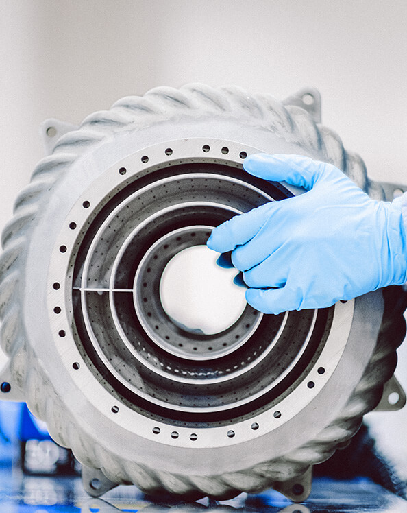

Explore the state of innovation today to examin what the world’s most innovative leaders are doing to succeed.
Pride and Protectionism
A Quest for
Innovation Agency
The world's most innovative leaders were surveyed, and the results are in. There are emerging players, technologies and challenges.
Entering 2020, nations globally made strong progress on innovation. Despite challenges, including COVID-19, setbacks to innovation pace, mobility restrictions and self-confidence, innovation continues to be a priority.
Protectionist sentiment remains and is seen as an important element in helping countries recover from the pandemic.
Time will tell if Business Executives can reconcile their aspiration to protect homegrown innovation with their heavy reliance on global talent, funding and technology